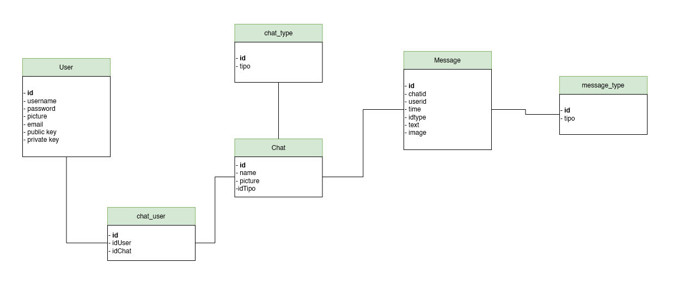
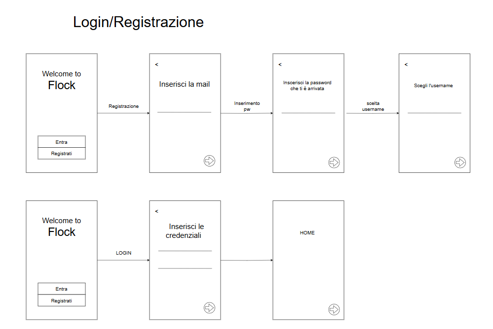
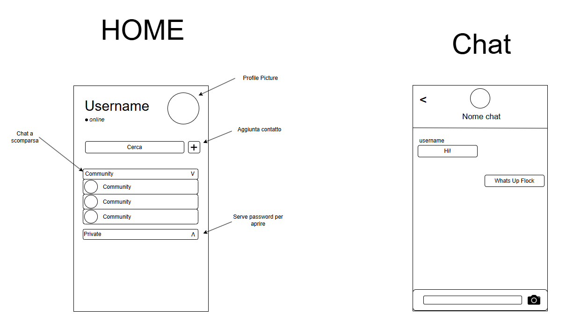
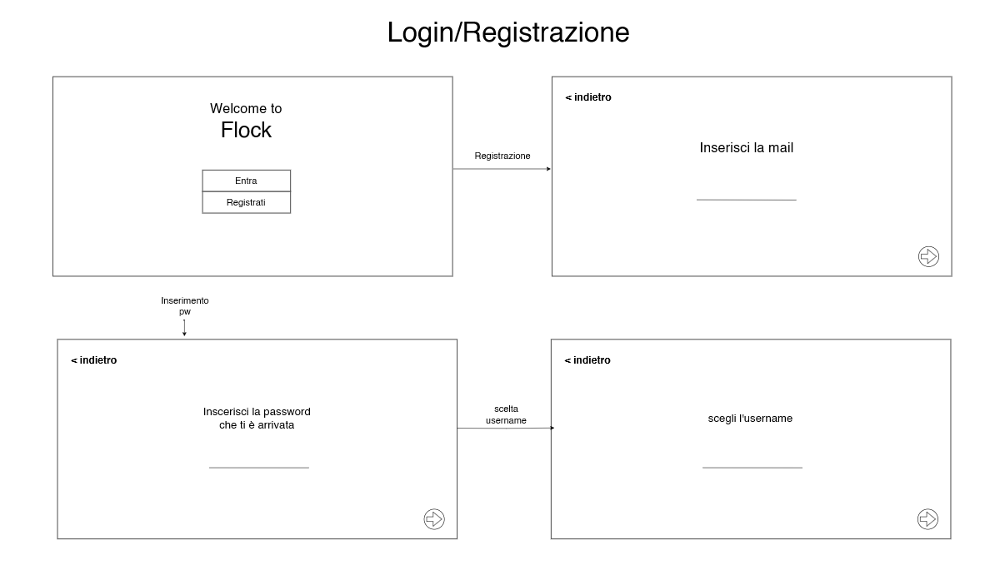
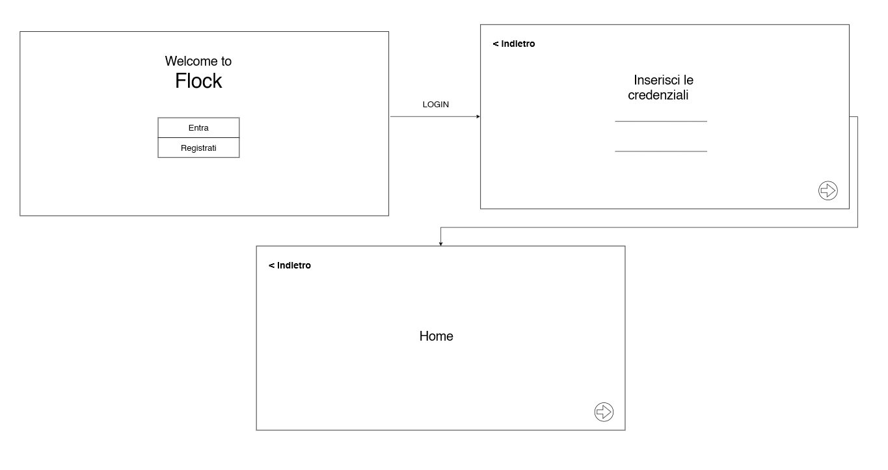
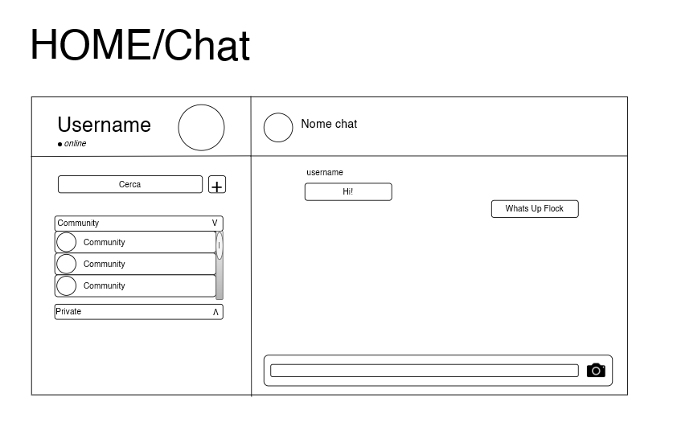

Documentazione
Progetto Chat
Il progetto ha l’obiettivo di creare un’applicazione di chat semplice e completa, pensata prima di tutto per funzionare bene su smartphone (mobile-first), ma accessibile anche da computer. Gli utenti potranno registrarsi con nome e password, e comunicare in tempo reale con altri utenti attraverso stanze comuni, gestite da un amministratore, oppure tramite chat private tra due persone. Durante le conversazioni sarà possibile inviare testo, emoticon e immagini. Tutti i messaggi verranno salvati per permettere la visualizzazione dello storico delle chat in qualsiasi momento.
Le richieste erano:
Implementare un sistema di chat completo che prevede:
- la registrazione utente (nome e password)
- un insieme di stanze comuni (definite in una pagina di admin)
- possibilità per gli utenti di fare chat private (max 2 persone)
- possibilità di inviare testo, emoticon, immagini
- Classe/Anno: 5BINF - 24/25
- Author: Ciolacu, Labi, Luisi, Mariani
- Creato: 5 maggio 2025
- Ultima modifica: 22 maggio 2025
Architettura informazione
Diagramma di Casi d'uso
Diagrammi di oggetti

Contenuti del progetto
Tutti i contenuti delle chat (Utenti, messaggi, immagini...) vengono salvati sul database
Wireframes
    Il progetto
In questa sezione vanno inserite ulteriori informazioni aggiuntive (es. credenziali) ed il link al progetto